Voxel Global Ilumination
Git repo
Overview
We have implemented Voxel Global illumination and VR pipeline with Vulkan for the final project of GPU programming. We have decided to use Vulcan to implement what each team member is interested in. However, the relevance of the objects was too different each other, and the scale was too large to merge them in a given time. Thus, we could not use most of our time to collaborate. Byumjin Kim have taken to implement the engine base and VXGI which referred to Interactive indirect illumination using voxel cone tracing, and Josh Lawrence have taken the VR mode and the part for interacting with Oculus HMD.
Deferred Rendering
We chose deferred rendering as our base rendering system, which makes it easier to apply post-process effects. It uses four G buffers (Albido, Specular, Normal and Emissive) to store information needed for PBR.
| Debug display | G-buffer structure |
|---|---|
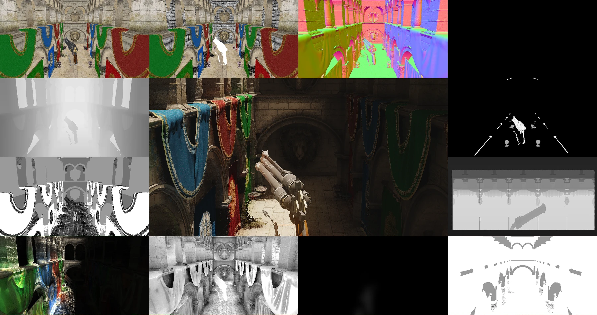 |
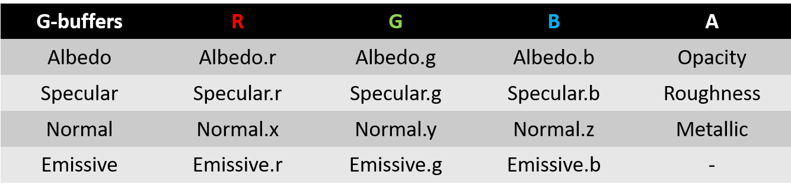 |
HDR
HDR can represent a greater range of luminance levels than can be achieved using more ‘traditional’ methods, such as many real-world scenes containing very bright, direct sunlight to extreme shade, or very faint nebulae.
Bloom Effect
I have used HDR for creating bloom effect the simplest and effective post-process effect. First, I extracted the very bright region from the scene image, then obtain the desired image contrast through color’s scale and bias.
| Extracted HDR Color |
|---|
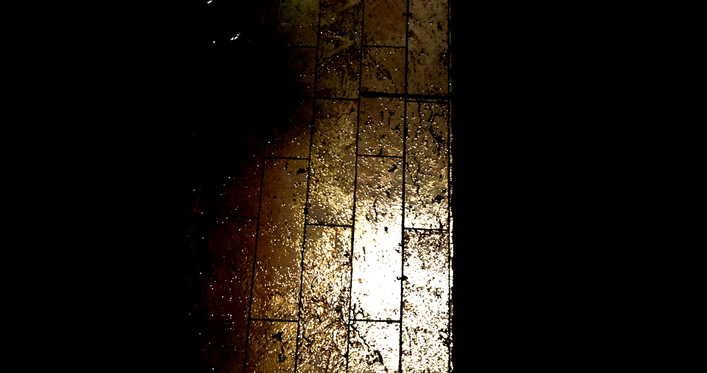 |
After that, two-pass seperable gaussian blur can be used to obtain the bloom effect. However, typically, using a frame buffer of the same resolution is not large enough to get satisfied the size of the kernel. In order to solve this problem, the size of the blur kernel was increased by applying 1/2 down-sampling for each stage of blur.
The interesting point is, I’ve tried both the traditional fragment shader approach and the compute shader (using shared memory), but unlike the expectation, the compute shader version showed a slower performance.
| 1/2 horizon blur | 1/4 vertical blur | 1/8 horizon blur | 1/8 vertical blur |
|---|---|---|---|
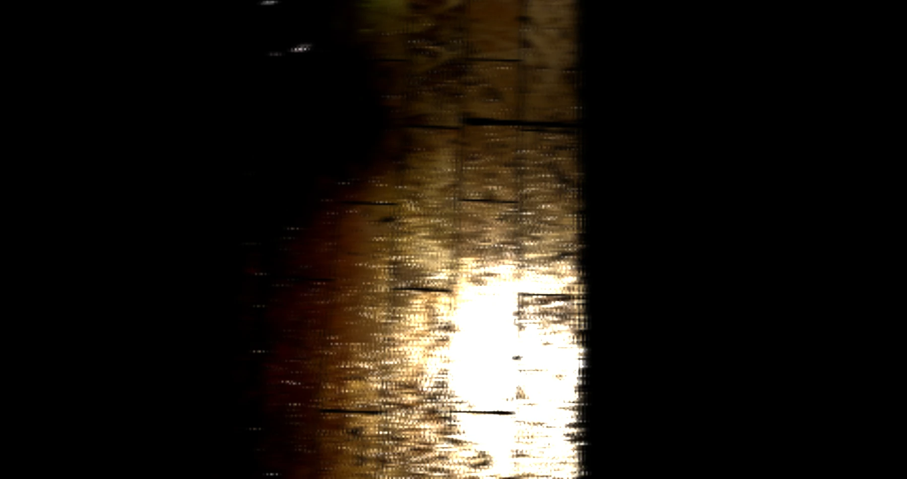 |
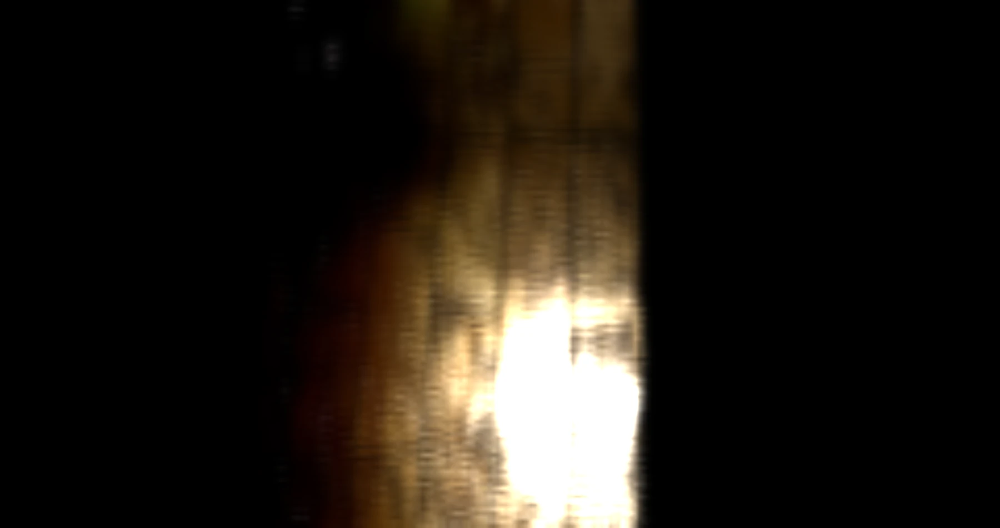 |
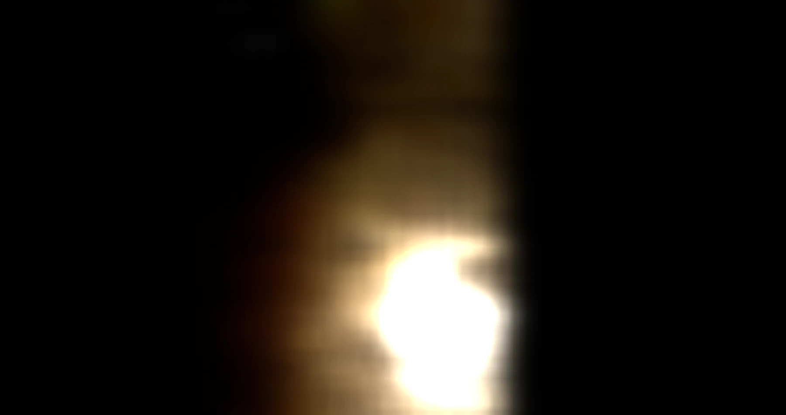 |
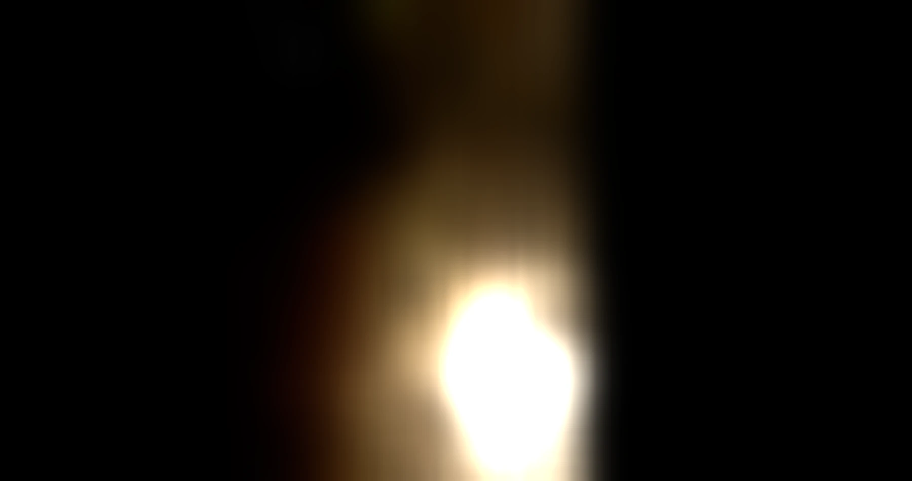 |
Tone Mapping
Tone mapping is the easiest and most effective way to get a more realistic scene. First, I applied a low temperature color(3600K) to give a feeling of dawn. After that, applied RomBinDaHouse Tone Mapping, which was effective in highlighting the contrast of our scene.
| Original Color | Color temperature | RomBinDaHouse tone mapping |
|---|---|---|
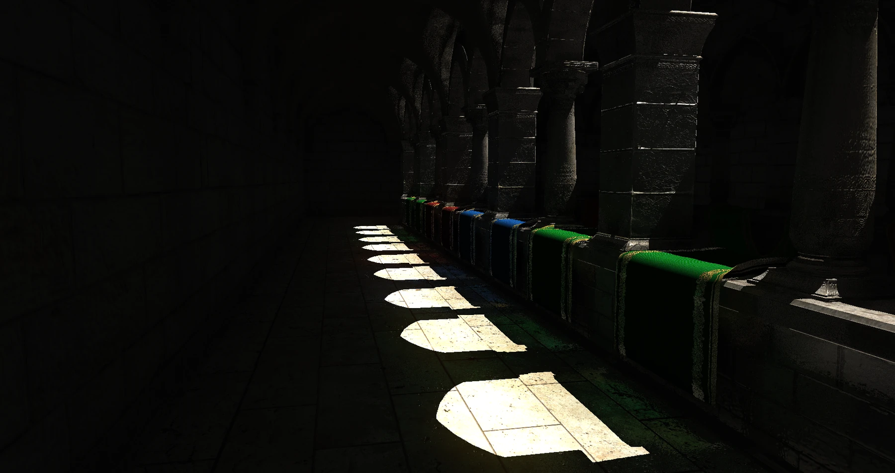 |
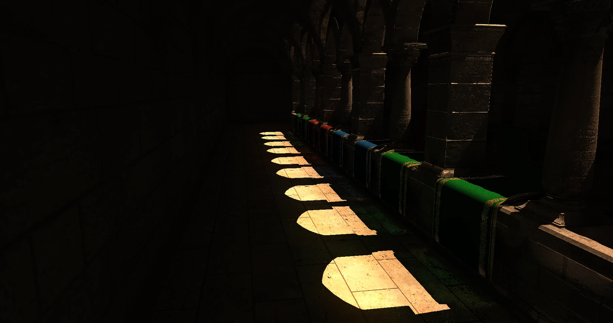 |
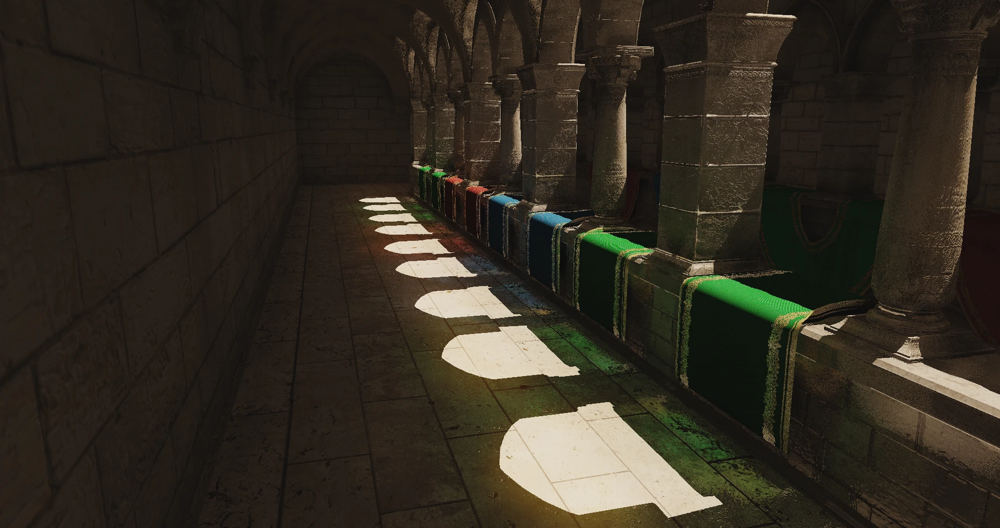 |
Voxel Global illumination
I referred to a paper Interactive indirect illumination using voxel cone tracing published in Nvidia, which uses Voxelizied meshes to obtain GI with using cone tracing.
Voxelization
First, the area of the scene to be voxelized is determined, and the objects contained in the scene are voxelized into triangles. That is, in the geometry shader, an axis providing the widest area when each triangle is projected among the world x, y and z axis is selected using the normal vector of the rectangle, and the projection is performed based on the axis. Then, conservative rasterization is applied to prevent to generate missing voxels. Finally, in the paper, it constructs SVO by creating a fragment list by collecting fragments generated from a fragment shader, but I simply stored information of voxels using 3d texture, which has 512x512x512 resolution.
| Voxelized Meshes |
|---|
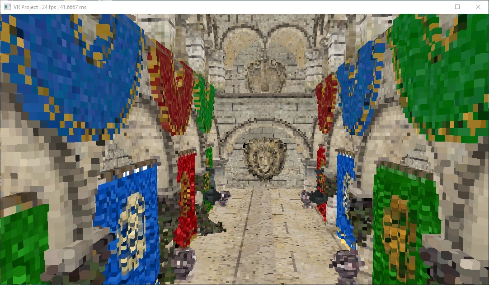 |
Mip-Mapping
The generated 3d texture should have mip-mapped values step by step for voxel cone tracing. OpenGL supports automatic mipmap generation, but Vulkan is not, so I had to do it manually. To accomplish this, I used a compute shader for each mipmap stage to create a new mipmap by level. But, this process was so slow that dynamic 3d texture mipmapping was not possible in real time. So, I had to get GI by voxelizing from static objects only.
| Mip level 0 | Mip level 1 | Mip level 2 | Mip level 3 |
|---|---|---|---|
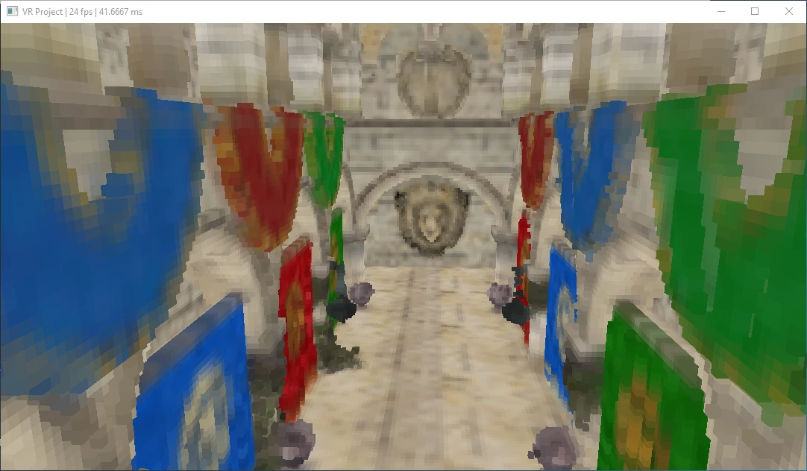 |
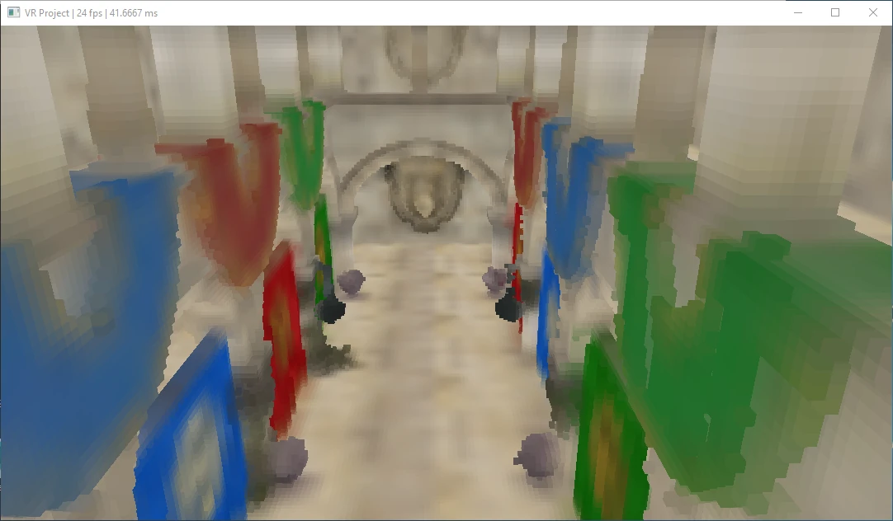 |
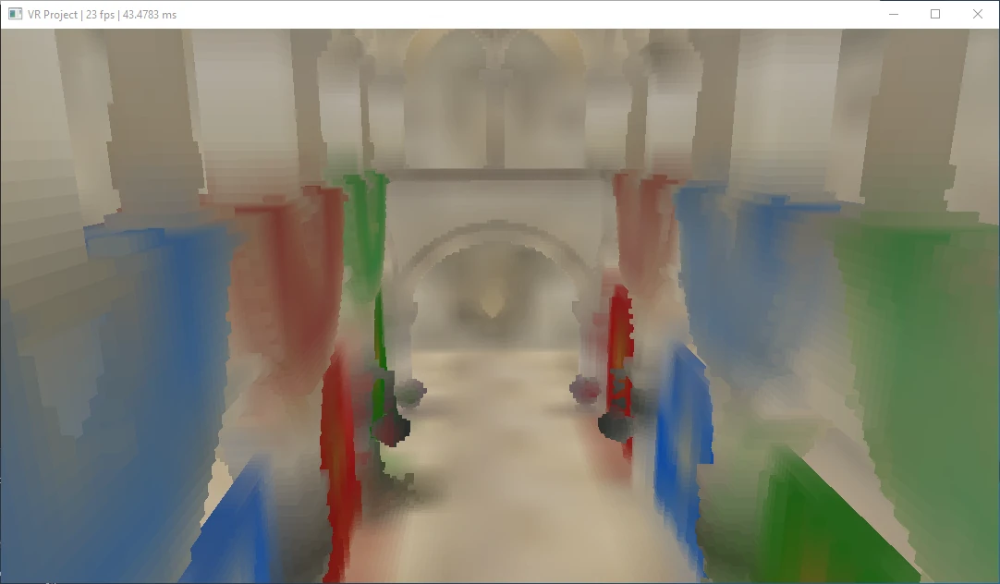 |
Voxel-Cone tracing
Now, to get the GI, we need to do voxel cone tracing on the post process stage. But, real voxel cone tracing is really slow in real-time. So, using with our voxel 3dtextures’ mipmapped values, we can approximate this step with using ray marching with several samples from screen space world position. Depending on its sample distance, we can decide which mipmapped voxel values should be used.
And, before getting the sample color from the texture, determine whether the voxel is currently obscured by the shadow. Because the voxel in the shadow cannot actually reflect any light. To obtain the diffuse GI, seven voxel cones of 60 degrees were used to cover the hemisphere area.
| GI Only |
|---|
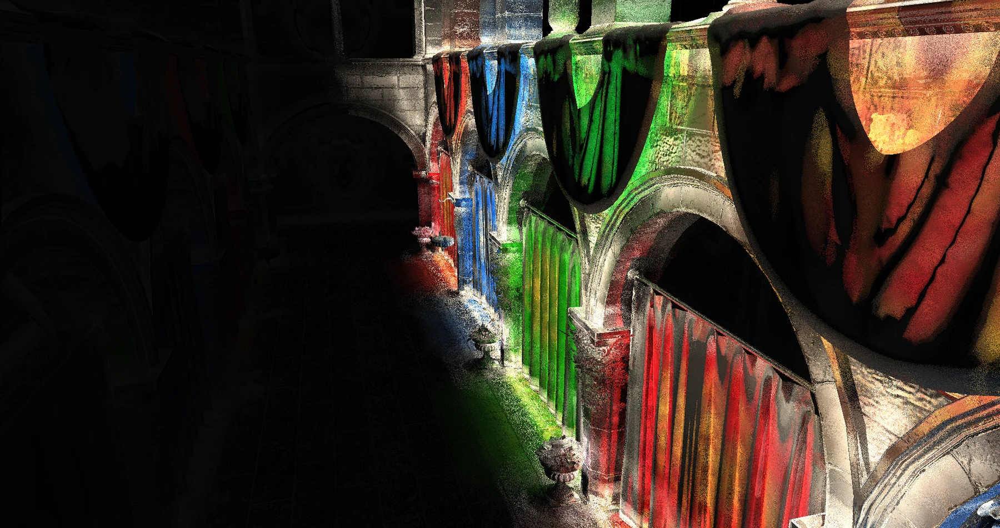 |
One of the advantage of using voxel contracing is that we can get ambient occlusion free.
| AO Only |
|---|
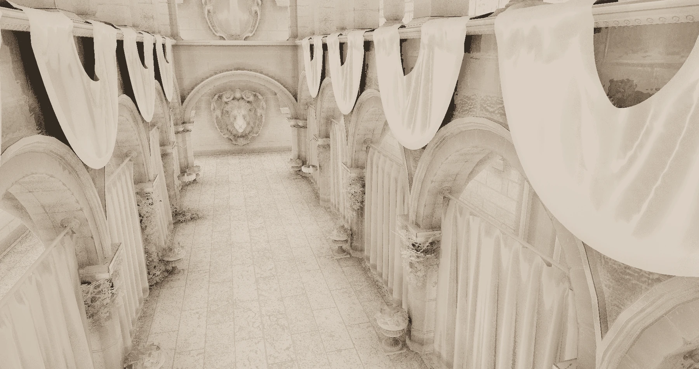 |
| Light Only | Light + AO | Light + AO + GI |
|---|---|---|
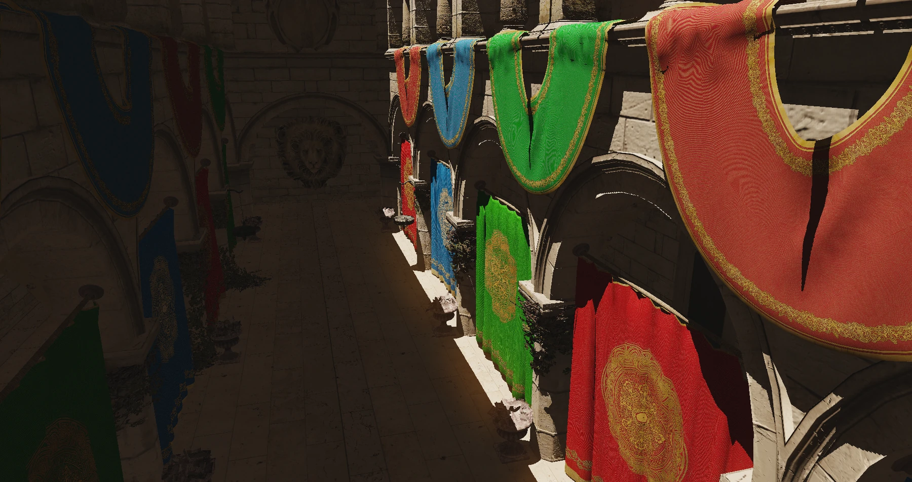 |
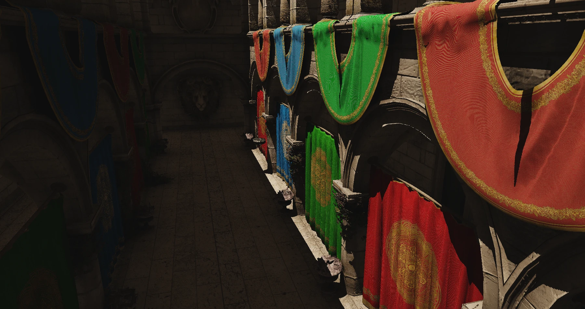 |
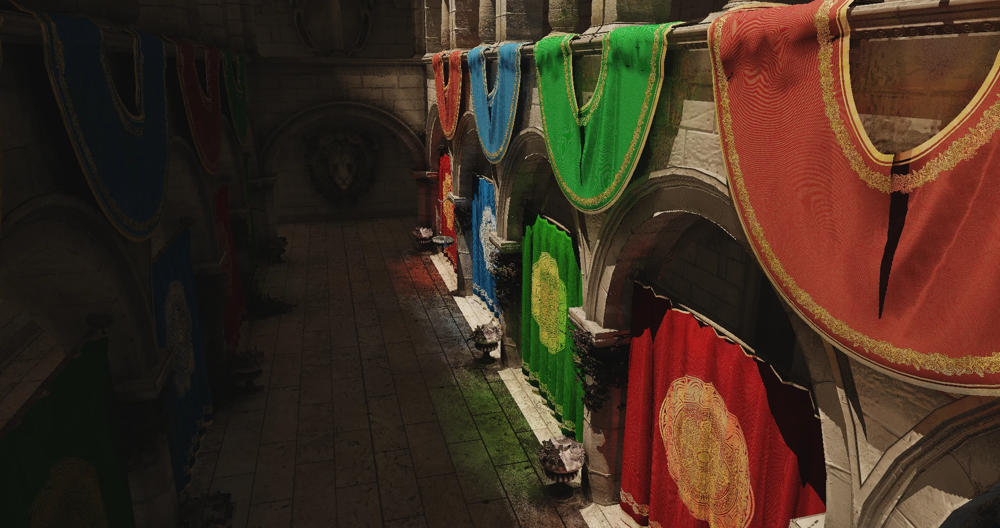 |